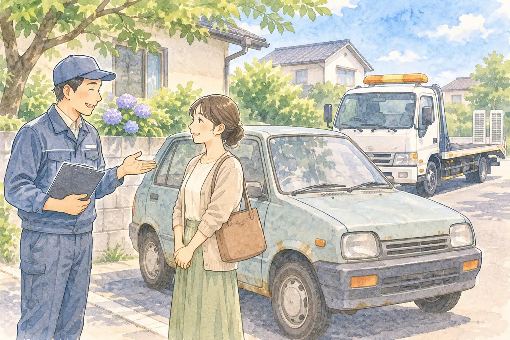

買い替えで古い車をどうするか迷っている方へ
車を買い替えるとき、古い車はいつ・どう手放す？
下取り・売却・廃車買取の考え方と、タイミングの注意
公開
こんにちは、東京都足立区江北で自動車解体・廃車買取をしている「大崎商店 環七店」です。
「新しい車に買い替える。古い車は、どうすればいい？」
「ディーラーで下取りしてもらうのと、廃車買取に出すのは、どう違う？」
「いつ手放せばいいの？ 納車の前？ 後？」
車の買い替えでは、新しい車を選ぶことに気を取られて、古い車の手放し方が、あとまわしになりがちです。この記事では、古い車の手放し方（下取り・売却・廃車買取）の考え方と、手放すタイミングで、気をつけたいことを、やさしくご紹介します。後半では、足立区の大崎商店の場合もご案内します。
① 古い車の手放し方は、大きく3つ

| 手放し方 | どんな方法？ | 向いているのは |
|---|---|---|
| 下取り | 新しい車を買うお店に、古い車を引き取ってもらう。新しい車の購入と、まとめて手続きできる | 手間をかけたくない。買い替え先で、一度に済ませたい |
| 売却（中古車として） | 中古車店や買取店に、中古車として売る | まだ十分に乗れる車で、車として売れそう |
| 廃車買取（解体） | 解体する前提で、引き取ってもらう。部品や資源として評価される | 古い・走行距離が多い・動かない・状態が悪い。「下取りは0円」と言われた |
古い車や動かない車でも、修理して再販売される場合があります。表の「廃車買取（解体）」は、解体する場合の説明です。年式や走行距離だけで、解体すると決まるわけではありません。
どれが良いかは、車の状態と、お店の条件で変わります。1か所だけで決めず、見積もりを確認すると安心です。古い車の値段の見立ては、古い車・10万km超えの車でも値段はつく？の記事をご覧ください。
② 手放す「タイミング」で、気をつけたいこと
買い替えでは、新しい車が届く日（納車日）と、古い車を手放す日の、ずらし方が大切です。
- 古い車を先に手放すと、新しい車が届くまで、乗る車がなくなります。通勤や通院などで必要な方は、納車のあとに引き渡す予定で、早めに依頼先へ相談しましょう。納車が遅れる場合の、引き渡し日の変更についても確認しておくと安心です
- 2台を持つ期間は、費用が重なる場合があります。税金・保険・駐車場代は、課税の時期や契約によって異なり、すべてが2倍になるわけではありません。重なる費用を確認して、引き渡し日を決めましょう。維持費の考え方は、車の維持費は月いくら？の記事をご覧ください
- 自動車税は、時期によって扱いが変わります。普通車の自動車税（種別割）は、年度の途中で抹消登録すると、原則として抹消した月の翌月から年度末までの分が月割で還付されます。車を渡しただけ・名義変更しただけでは、この還付の対象になりません。軽自動車税（種別割）には、年度途中の廃車による月割還付はありません。くわしくは、廃車にするとお金は戻ってくる？、軽自動車は自動車税の還付がない？の記事をご覧ください。3月から4月をまたぐ場合は、3月中に廃車した方がいい理由の記事も、あわせてご覧ください
- 任意保険は、車を入れ替える手続きが必要です。新しい車の補償を始める日時と、古い車を最後に運転する日時を、契約している保険会社に早めに伝えてください。車両入替後も、古い車まで自動的に補償されるとは限りません。納車後に古い車を持ち込む場合も、運転する間の補償を確認しましょう
- 駐車場を借りている場合は、2台分の置き場所が、必要な期間があるかも、確認しましょう
③ 古い車を手放す前に、確認すること
依頼先によって、対応や条件は異なります。次の点を、確認しましょう。
- 車検証の、所有者と使用者：所有者が、ご自身か、ローン会社・販売店か。電子車検証で所有者が分からない場合は、「自動車検査証記録事項」や車検証閲覧アプリでも確認できます。ローンが残っている場合の進め方は、ローンが残っている車は廃車できる？の記事をご覧ください
- 手続きは、誰が、いつ行うのか：下取りの場合は、名義変更や抹消を、お店が行うのか。車を渡す日と、書類の期限、手続き完了の目安。車を渡す日と、名義変更・抹消が完了する日は同じとは限りません。完了を確認する書類が必要なら、依頼時に伝えましょう
- お金の内訳：車の価格と、リサイクル料金相当額、還付金・返戻金が、どう扱われているか。中古車として売る場合は、リサイクル料金相当額（資金管理料金を除く）も精算します。解体する場合は、預託済みのリサイクル料金は返金されません。還付金等が買取価格に含まれるのか、別に受け取るのかも確認しましょう。くわしくは、廃車の手数料・解体費用・レッカー代は？の記事をご覧ください
- 車の引き渡し方法：持ち込むのか、引き取りに来てもらうのか。引き取りの費用が、かかるか
- 必要な書類：廃車に必要な書類チェックリスト（普通車）、軽自動車の廃車に必要な書類・準備チェックリストをご覧ください
下取りの金額が、思っていたより低かった場合は、別のお店で、見積もりを取るのも、一つの方法です。すでに下取りを含めて契約している場合は、依頼先へ変更できるか確認してください。
④ 大崎商店の場合

ここからは、足立区の大崎商店の場合をご紹介します。
- 車の引き取り・買取に対応しています。足立区内は、引き取り無料です。足立区外の条件は、所在地と車の状態を伺って事前にご案内します
- 年式・走行距離で、「ここから先は、買い取れない」という線は、ありません。 ハイエースなど、トヨタ車は、値段がつきやすいです。買取価格が、1万円ほどの車でも、買い取っています
- 解体する車で、車検が残っている場合などは、条件に応じて還付金・返戻金を扱います。自動車重量税の還付は、適正な解体と還付申請を行い、車検の残存期間が1か月以上ある場合が対象です。普通車・軽自動車とも対象になり得ます。見込額を買取価格に含める方法と、ご自身で受け取る方法があり、買取価格に含めた分は大崎商店が受け取ります。同じ金額を別に受け取る形ではありません
- 修理して再販売する車・引き続き使用する車は、リサイクル料金相当額（資金管理料金を除く）を、車両の買取価格に上乗せしてお支払いします。解体する車の預託済みリサイクル料金は、返金されません
- ローンが残っている車、所有者が、ディーラー・販売店の車も、ご相談をお受けしています。お電話で、車検証の情報（所有者と使用者が、ご本人か）と、ローンが残っているかを、お伺いします
- 普通車は、車として再販売できる車は一時抹消、解体する車は永久抹消を行います。先に一時抹消してから、解体届出を行う場合もあります。普通車の一時抹消は、書類がそろえば原則1週間以内が目安です（祝日が続く場合などは変わります）。解体を伴う手続きの日数は、作業状況により異なります
- 軽自動車は、再販売する車は一時使用中止、解体する車は解体返納（一時使用中止ずみなら解体届出）です。先に一時使用中止にする場合もあり、日数は個別にご案内します
- 解体費用・手続き代行費用・印紙代は、別請求しません。お支払いする金額、お支払いいただく金額がある場合は、事前にご案内します
- 車のお持ち込みは、どこからでも歓迎（基本は環七店。日時は、事前にお電話でご相談ください）
新しい車の納車日に合わせて、古い車の引き取り日を調整したいというご相談も、お受けしています。納車日が決まっている場合は、お電話のときに、お伝えください。
大崎商店では、車の「処分代」という費用は、いただいていません。 車の状態や場所に応じて、買取、または、無料の引き取りになります（足立区外など、条件がある場合は、事前にご案内します）。
実際に、よそのお店で新しい車を買ったときに、「古い車の処分代がかかる」と言われて、大崎商店へお持ち込みいただいた例があります。 買い替えのお店で、処分費用がかかると言われたときは、ほかのお店でも、見積もりを取ってみるのも、一つの方法です。
引っ越しをきっかけに車を手放すときは、「引っ越しで車を手放すとき、廃車と売却どちらがいい？判断の目安と、引っ越し前にやること」の記事もご覧ください。
よくある質問
Q. 買い替えのとき、古い車は、納車の前と後、どちらに手放せばいいですか？
A. 乗る車が必要な方は、納車後に引き渡す予定で、早めに相談しましょう。費用が重なる期間や、納車が遅れた場合の変更も確認してください。納車後に古い車を運転する場合は、任意保険の補償が続くか、保険会社への確認も必要です。
Q. ディーラーで下取りが0円と言われました。廃車買取に出せますか？
A. 廃車買取の相談ができます。解体する車にも、部品・資源として値段がつく場合があります。対応条件や見積もりを確認して、比べてみてください。
Q. ローンが残っていても、買い替えできますか？
A. ローンが残っている場合は、車検証の所有者を確認し、ローン会社の承諾が必要になることがあります。大崎商店では、ローンが残っている車のご相談も、お受けしています。
Q. 買い替えのお店で、「処分代がかかる」と言われました。ほかのお店でも、相談できますか？
A. ご相談いただけます。大崎商店では、車の処分代という費用は、いただいていません。買取、または、無料の引き取りになります。実際に、そのようなご事情で、お持ち込みいただいた例もあります。足立区外など、条件がある場合は、事前にご案内しますので、お電話で、車の情報をお伝えください。
Q. 古い車の手続きは、自分でするのですか？
A. 大崎商店では、車の引き取り・買取に伴う、廃車手続きを行います。書類手続きだけの代行は、お受けしていません。
Q. 自動車税は、戻りますか？
A. 普通車の自動車税（種別割）は、年度途中の抹消登録で、原則として翌月から年度末までの分が還付されます。名義変更だけでは、この還付はありません。軽自動車税（種別割）には月割還付がありませんが、解体時の自動車重量税の還付は別の制度です。くわしくは、上の記事をご覧ください。
買い替えのときの古い車のご相談は、大崎商店へ
電話で相談する 03-3854-4141メールで相談する（フォーム）ご来店の前に、お電話ください。引き取りなどで外出していることもあり、お電話いただければ、受け入れの可否や、ご案内できる日時をお伝えできます。
大崎商店 環七店
電話：03-3854-4141
〒123-0872
東京都足立区江北7丁目1−3
営業時間：月〜土 10:00〜18:00
休業日：日曜・祝日
環七沿い／舎人ライナー
西新井大師西駅
大崎商店 入谷店
電話：03-3899-2837
〒121-0836
東京都足立区入谷7丁目5−11
営業時間：月〜土 9:30〜17:30
休業日：日曜・祝日・第2土曜
引き取りやご相談のお電話は、環七店がスムーズです。お電話の際は、「買い替えで、古い車を手放したい」とお伝えください。
※掲載のイラストはAIで作成したイメージです。実際の店舗・車の様子を撮影したものではありません。
参考：東京都主税局・自動車税のよくある質問／足立区・軽自動車税／国税庁・自動車重量税の廃車還付制度／自動車リサイクル促進センター・リサイクル料金の支払い・受け取りの流れ／三井住友海上・車両入替時の補償開始時点について